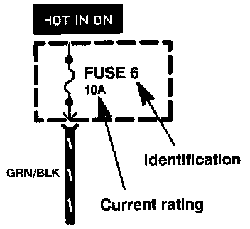

Operation CHARM
: Car repair manuals for everyone.
Home
>>
Acura
>>
1994
>>
Legend Sedan V6-3206cc 3.2L SOHC FI
>>
Repair and Diagnosis
>>
Brakes and Traction Control
>>
Relays and Modules - Brakes and Traction Control
>>
Fail Safe Relay
>>
Diagrams
>>
Diagram Information and Instructions
>>
Symbols
>>
Fuses
Fuses
Fuses:

This means power is supplied when the ignition switch is in ON (II).